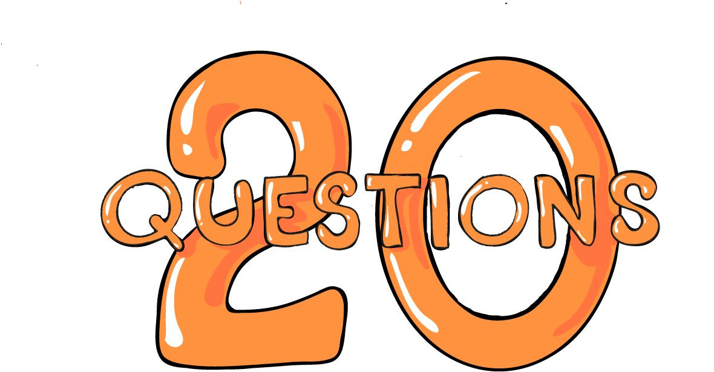

The other day I was playing games in my apartment with my friends. One of the games that came up was guessing 20 questions. I wondered, could I stimulate this game with an imaginary AI friend?
THE GAME
USER
Let’s play 20 questions!
ASSISTANT
Great! I’m ready!
You think of something, and I’ll ask the questions. Remember, you can only answer ‘yes’ or ‘no’.
Let me know when you’ve got something in mind, and tell me: Is it a person, place, or thing?
USER
I have something in mind, and I can’t tell you!
ASSISTANT
Haha, very funny! You got me there!
But that’s actually my first question to you to help me categorize it. You can tell me if it’s a person, place, or thing, and your answer will count as one of the 20 questions!
So, let’s try again:
Is what you’re thinking of a person, a place, or a thing?
USER
Thing
ASSISTANT
Okay, great! A “thing” it is. (Question 1/20)
Now for my next question:
Is it alive? (Question 2/20)
USER
No
ASSISTANT
Got it. So, a non-living thing. (Question 2/20)
My next question:
Is it man-made? (Question 3/20)
USER
Yes
ASSISTANT
Okay, a non-living, man-made thing. Good to know! (Question 3/20)
Next up:
Is it something you would typically find indoors? (Question 4/20)
USER
Yes
ASSISTANT
Okay, a non-living, man-made thing, typically found indoors. (Question 4/20)
My next question:
Is it electronic? (Question 5/20)
USER
Yes
ASSISTANT
Okay, a non-living, man-made, indoor, electronic thing. This is getting interesting! (Question 5/20)
Next question:
Is it something that you would typically carry with you when you leave your house? (Question 6/20)
USER
No
ASSISTANT
Okay, a non-living, man-made, indoor, electronic thing that is not typically carried with you. (Question 6/20)
That rules out a lot of portable gadgets!
Next question:
Is it a major household appliance, like a refrigerator, oven, or washing machine? (Question 7/20)
USER
No
ASSISTANT
Okay, so it’s a non-living, man-made, indoor, electronic thing, not typically carried, and not a major household appliance. (Question 7/20)
That narrows it down quite a bit!
My next question:
Is its primary function related to entertainment or media consumption (like a TV, game console, or stereo)? (Question 8/20)
USER
Yes
ASSISTANT
Excellent! A non-living, man-made, indoor, electronic thing, not typically carried, not a major appliance, and primarily for entertainment/media. (Question 8/20)
Alright, my next question:
Does it have a screen or display as its primary output? (Question 9/20)
USER
Yes
ASSISTANT
Okay, a non-living, man-made, indoor, electronic thing, not typically carried, not a major appliance, primarily for entertainment/media, and has a screen as its primary output. (Question 9/20)
That’s a very good set of clues!
Next question:
Is it primarily used for displaying video content, such as movies, TV shows, or streaming services? (Question 10/20)
USER
No
ASSISTANT
Okay, so it’s a non-living, man-made, indoor, electronic thing, not typically carried, not a major appliance, primarily for entertainment/media, has a screen, but is not primarily used for displaying passive video content (like movies/TV shows). (Question 10/20)
This is a good clue! It suggests something more interactive or focused on a different type of visual media.
My next question:
Is it primarily used for interactive activities, such as playing video games or using computer applications? (Question 11/20)
USER
No
ASSISTANT
Okay, a non-living, man-made, indoor, electronic thing, not typically carried, not a major appliance, primarily for entertainment/media, has a screen, not primarily for passive video, and not primarily for interactive activities. (Question 11/20)
This is a very specific combination! It’s not a TV, a game console, a computer, or a tablet.
My next question:
Is its primary function to display still images or artwork? (Question 12/20)
USER
No
ASSISTANT
Okay, this is a very interesting combination! A non-living, man-made, indoor, electronic thing, not typically carried, not a major appliance, primarily for entertainment/media, has a screen, but is not primarily for passive video, not for interactive activities, and not for still images or artwork. (Question 12/20)
This implies something dynamic and visual, but not in the usual categories.
My next question:
Does it primarily display abstract, dynamic patterns, or visualizations, perhaps in response to sound or other inputs? (Question 13/20)
USER
Yes
ASSISTANT
Aha! This is a fantastic clue! A non-living, man-made, indoor, electronic thing, not typically carried, not a major appliance, primarily for entertainment/media, has a screen, not primarily for passive video, not for interactive activities, not for still images/artwork, and primarily displays abstract, dynamic patterns, or visualizations, perhaps in response to sound or other inputs. (Question 13/20)
I think I have a very strong idea now!
My next question:
Is its display typically synchronized with or influenced by audio (like music)? (Question 14/20)
USER
Yes
ASSISTANT
Okay, fantastic! A non-living, man-made, indoor, electronic thing, not typically carried, not a major appliance, primarily for entertainment/media, has a screen, not primarily for passive video, not for interactive activities, not for still images/artwork, primarily displays abstract, dynamic patterns or visualizations, and its display is synchronized with or influenced by audio (like music). (Question 14/20)
This is a very specific and strong set of clues! I think I’m very close.
My next question:
Is it primarily a standalone device whose main purpose is to create these visual displays, often in conjunction with an external audio system? (Question 15/20)
USER
No
ASSISTANT
Okay, a non-living, man-made, indoor, electronic thing, not typically carried, not a major appliance, primarily for entertainment/media, has a screen, not primarily for passive video, not for interactive activities, not for still images/artwork, primarily displays abstract, dynamic patterns or visualizations, its display is synchronized with or influenced by audio (like music), and it is not primarily a standalone device whose main purpose is to create these visual displays. (Question 15/20)
This “no” is very helpful! It tells me the visualization is likely a feature of a device with a broader primary purpose.
My next question:
Is its primary overall function to act as a smart assistant or smart home control hub? (Question 16/20)
USER
No
ASSISTANT
Okay, a non-living, man-made, indoor, electronic thing, not typically carried, not a major appliance, primarily for entertainment/media, has a screen, not primarily for passive video, not for interactive activities, not for still images/artwork, primarily displays abstract, dynamic patterns or visualizations, its display is synchronized with or influenced by audio (like music), not a standalone visualizer device, and not a smart assistant/home hub. (Question 16/20)
This is a very specific niche! The “not a standalone visualizer” and “not a smart assistant” are key.
My next question:
Is it primarily a device for playing or amplifying music, where the screen’s visualizations are a secondary feature? (Question 17/20)
USER
No
ASSISTANT
Okay, a non-living, man-made, indoor, electronic thing, not typically carried, not a major appliance, primarily for entertainment/media, has a screen, not primarily for passive video, not for interactive activities, not for still images/artwork, primarily displays abstract, dynamic patterns or visualizations, its display is synchronized with or influenced by audio (like music), not a standalone visualizer device, not a smart assistant/home hub, and not primarily a device for playing or amplifying music. (Question 17/20)
This is a very specific and challenging combination! The “not primarily a music player” is a strong clue, as is the “not a standalone visualizer.” This suggests the visualizer is a prominent feature, but not the sole purpose, and the device isn’t just a speaker with a screen.
Given all these clues, I think I have a good idea. My guess will count as a question.
Is it a dedicated audio spectrum analyzer or VU meter, designed as a decorative or entertainment component for a home audio system? (Question 18/20)
USER
No
ASSISTANT
Okay, that “No” to a dedicated analyzer was very helpful in ruling out a strong candidate. (Question 18/20)
Let’s recap: A non-living, man-made, indoor, electronic thing, not typically carried, not a major appliance, primarily for entertainment/media, has a screen as its primary output, not for passive video, interactive activities, or still images, but does primarily display abstract, dynamic, audio-reactive patterns/visualizations. Crucially, it’s not a standalone visualizer, not a smart assistant/hub, not primarily a music player/amplifier, and not a dedicated audio spectrum analyzer.
This is a very specific and challenging combination! The “not a standalone visualizer” combined with “primarily displays abstract patterns” means the visualizations are a prominent feature of the screen, but not the sole or primary purpose of the device as a whole.
Given all these constraints, I have one more specific guess in mind. This will be my 19th question.
Is it a device designed primarily to create ambient lighting effects or mood lighting, where its screen displays these abstract, dynamic, and audio-reactive patterns as a central part of that visual experience? (Question 19/20)
USER
No
ASSISTANT
Okay, this is a truly challenging one! That “No” to ambient lighting (Q19) was very insightful.
Let’s recap the very specific set of clues: It’s a non-living, man-made, indoor, electronic thing, not typically carried, not a major appliance. It’s primarily for entertainment/media and has a screen as its primary output. This screen primarily displays abstract, dynamic patterns or visualizations that are synchronized with or influenced by audio (like music).
Crucially, it is not primarily for passive video, interactive activities, or still images. It’s not a standalone visualizer, not a smart assistant/home hub, not primarily a music player/amplifier, not a dedicated audio spectrum analyzer, and not primarily a device for ambient lighting effects.
This means the screen’s main job is these abstract, audio-reactive visuals, but the device itself isn’t just a visualizer, music player, or light. It’s a display that provides this unique visual entertainment.
Given all these nuanced “no” answers, I have one final guess for my 20th question.
Is it a specialized display panel or screen, such as a large-format LED art display or a display component often found in high-end sound systems or entertainment setups, designed to dynamically visualize audio in abstract ways for aesthetic or atmospheric purposes, but not primarily for traditional video, interactive content, or music playback itself? (Question 20/20)
USER
No - it was Wicked 2, the film or Broadway show?
ASSISTANT
Ah, Wicked 2, the film or Broadway show!
Wow, you really stumped me on that one! That was a fantastic and very tricky “thing” to pick, especially with some of the answers that led me down a completely different path!
Let’s look at where I went wrong, primarily with my interpretation of “thing” as a physical object:
- “Is it electronic?” (Yes) - This was a big one! While you watch a film or show on electronic devices, the film/show itself (the story, the production) isn’t inherently electronic. This sent me looking for a gadget.
- “Does it have a screen or display as its primary output?” (Yes) - Again, a film is displayed on a screen, but the film itself doesn’t have a screen. A live show’s primary output is the live performance, not a screen.
- “Is it primarily used for displaying video content…?” (No) - This one was particularly tricky! If it’s the film, the answer should be yes. If it’s the Broadway show, then no, as the primary content is live performance. This made me think it wasn’t a traditional video medium.
- “Does it primarily display abstract, dynamic patterns, or visualizations…?” (Yes) - This was the biggest curveball! Neither a film nor a Broadway show primarily displays abstract patterns; they display narrative, characters, sets, etc. This answer solidified my belief that I was looking for some kind of visualizer or unique display device.
You really played those answers cleverly, making me think of a very specific type of electronic display! I was deep in the world of audio-reactive screens and visualizers.
That was a brilliant choice and a very well-played game! Thanks for the fun challenge! You win this round!
REFLECTION
So – that the LLM was actually quite far from the correct answer given no context. When I played this with my friend, she was able to guess what I was thinking but perhaps that was because I had just gone to watch the film and had told her about it. This goes to show that interaction with LLMs and automation are not going to live up to the same kind of interations with humans because it is all depdent on the concrete knowledge and memory you decide to give as an input. In human language, there are latent pieces of information that your friend may know about you that you didn’t feel the need to share but they somehow knew. It doesn’t seem like AI has that personalized touch.